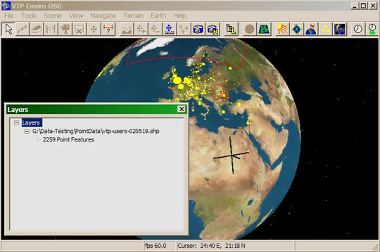

Several kinds of layers may be used on the terrain:
- Structure Layers
- Abstract Layers
- Image Layers
- Vegetation Layer. There is always and only one vegetation layer. You can Save it to the file it was loaded from, or use Save As to another file.
To open the layers dialog, the menu command is File: Layers.
Different kinds of layers will be displayed depending on whether you are in Earth View or Terrain View.

The layers are abstract (GIS data) layers drawn on the earth as Point or Polyline data. The dialog only displays information about the filename and number of features in each layer.
You can try opening the file Data/PointData/vtp-users.shp to see the locations of the first 2260 VTP recipients.
Several kinds of layers may be used on the terrain:
- Structure Layers
- Abstract Layers
- Image Layers
- Vegetation Layer. There is always and only one vegetation layer. You can Save it to the file it was loaded from, or use Save As to another file.